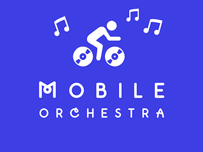

Some Projects
Here are some of my recent projects. Some are solo projects, some are group projects. There are a variety of things here: web apps, visualizations, cms-powered sites, videos, twitter bots, diy projects, and an annual food festival.
Vinyl car decal made for The Humane League's San Francisco office. Designed & made during the inaugeral Hack Night for Animals. Step-by-step article was featured as an editor's pick on Instructables.com. After the hack night, The Humane League commissioned me to make decals for all of their field offices. Tools: cnc vinyl cutter, Adobe Illustrator.
Twitter bot that shares pictures & info about adoptable animals from the shelter in Denver. Scrapes data from gov webpage, posts to twitter. Started by scraping, then consulted with the vendor to build an open data API for all cities. Tools: Node.js, Ruby.
Whiteboard for low-fi prototyping of mobile app ideas. Tools: Adobe Illustrator, cnc vinyl cutter.
Annual vegetarian festival in Worcester, MA. 7,000+ attendees, ~120 exhibitors, 200+ volunteers. I founded the community group in 2006 and launched the festival in 2009. In 2014, the Mayor of Worcester endorsed the event & proclaimed the following week "Worcester VegWeek".
Webpage countdown to the 2014 Code for America Summit. Tools: github.io pages, JavaScript, jQuery, Bootstrap.

A mobile webapp that generates music based on data from participants during a group bike ride, like a Critical Mass. Made by a team of 5 during the Civic Happiness hackathon.
Campaign website advocating vegetarianism. Tools: Bootstrap, PHP, Wordpress, JavaScript, jQuery.
Webapp that checks the number of attendees for a given facebook event. Tools: facebook API, python, bottle
Main website for Compassion Over Killing, a national organization focused on exposing and campaigning against animal cruelty on factory farms. Received over 1 million hits since launch. Tools: WordPress, PHP, jQuery, JavaScript, MySQL

Web app for helping actvists track literature distribution through free newspaper stands. Tools: CodeIgniter (MVC framework), PHP, MySQL, Bootstrap, jQuery, JavaScript, ChartJS.
DIY wallet made from a used soymilk container. Featured on the MAKE blog, workshop taught at Allston DIY Fest. Tools used for wallet: exacto knife. Tools used for website: HTML & CSS (this was made before there were good HTML/CSS/JS frameworks).
Video mashup of LFO's song "Summer Girls" played to video from ICP's song "Juggalo Island". Tools: iMovie, Audacity.
Reproducible tabletop display for Code for America brigades. Used when representing Code for America at an event. After I published the howto guide, Code for Croatia remixed it. Tools/materials: ShopBot CNC router, SolidWorks, acrylic paint.
Map of traffic accidents in Denver based on
open data from the city. Tools: JavaScript, Leaflet.js, Mapbox.js, Omnivore
Map of abandoned trolley tracks in Denver based on
open data from the city. Tools: JavaScript, Leaflet.js, Mapbox.js, Omnivore